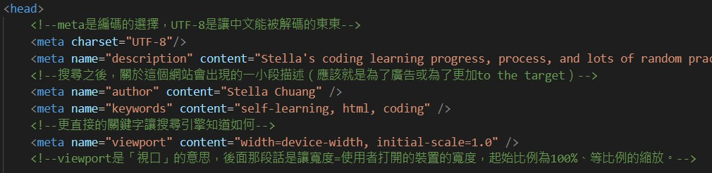
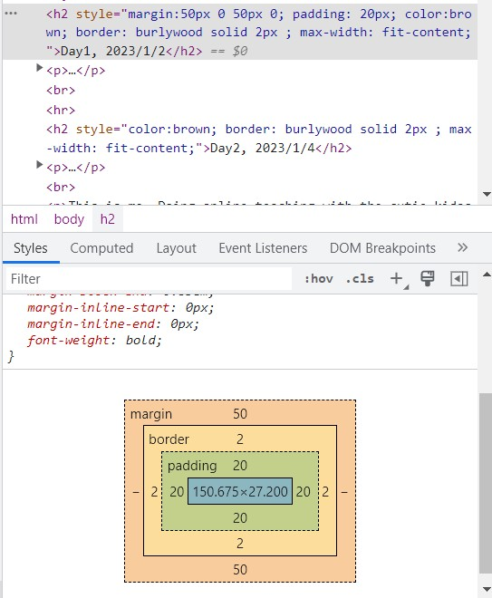
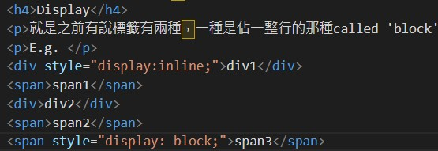

Author：Stella Chuang Contact：bibobibobibo89919@gmail.com
※這邊還不知道怎麼把這一槓設成一整行的那種，然後還有視窗在移動的時候會改變(應該是)字的排版，所以bgcolor會跟著改變嗚嗚嗚
p.s. 試過用height:80px去固定，但是感覺更醜嗚嗚
Day1, 2023/1/2
This is stella chuang, it's my first day of learning html!!!
Day2, 2023/1/4
hmmm, i didn't learn html yesterday because i went out with my friend spicy eating hot pot :')
This is me. Doing online teaching with the cutie kidos with rock red hoodies!!
 可以降子嗎?ㄟ可以只是會加在圖片旁邊而已嘻嘻
可以降子嗎?ㄟ可以只是會加在圖片旁邊而已嘻嘻
And this is me shooting pic as a record of bachelor graduation!!
And this is me doing micro teaching for SH in ETP :/ on YouTube
More Info ∥ Calendar | 2 | Me | Sup | Memes as practice for outside pic link
{kind=link}
The above was what what I've learned today! It's so fun!!!! I can't stop!!!(JK LOL)
Day3, 2023/1/5
As usual~, i will practice using what i learned today below!
First thing: list and table
List: Contact Me
(just like bullet point)
- Line
- Phone
and if we want them to have order, use:
- Line
- Phone
use different types of number to name the order:
- Line
- Phone
Table: Habbits Tracker
| Dates/Habbits | Reading | Coding |
| 1/4 | 1 hr | 2 hrs |
| 1/2 | 0.5 hr | 1 hrs |
Second thing: span and div容器
nothing to practice presenting tho, basically like putting what we want them to be in a package! for later-on adjustment going more smoothly.
Third thing: 輸入標籤~input and textarea
Input:
- 輸入一般帳號
- 輸入一般密碼
- 輸入日期
- 輸入checkbox
- 輸入一個range
- 上傳/輸入檔案
- 跑出"提交"的按鈕(prac)
誰是臭暈船仔？
今日心情4：
Textarea:
Fourth thing: meta標籤
這個標籤大部分都是在[增加網站資訊]用的，所以不太會顯示在網站上，沒有辦法展示出來～，把它寫在coding頁面的最上面當作練習而已（除非截圖加圖片辣、但我有點懶ㄟ，會補充在我的notion裡！）
好啦還是放上來證明我真ㄉ有練習哦哦哦哦!!!
Day4, 2023/1/6
First thing： Color
Dont have that much to say, just changing the words to different colors~
Second thing： Padding and Margin
不囉嗦上圖片（拍手）
這就是margin跟padding在講的東西，用來控制[空間]
Third thing： Float and Display
Float: Portfolio LOL
詳細的解釋請看老師ㄉ講解，有3D的概念在！（大概就是這些標籤與呈現的文字有些是在下面，有些是在上面，要讓他們同時在同一個區塊的話，要讓在下面的標籤浮～起來）
這邊做一個簡單的練習：
- This is me.
- On Dec. 30.
- At Bamiland, in Yiland.
- Took roughly 20 mins to get there.
- Tried to take a lovely photo of me and cute bambi.
- Tho all she wanted was to GET OUT OF HERE!!!!!! ;'(
Sorry, 簡單就是不簡單，沒辦法讓兩個靠近一點QQQ用margin也沒辦法嗚嗚嗚
Display
就是之前有說標籤有兩種，一種是佔一整行的那種called 'block'、另一種是內容多大就佔多大的called 'inline'，display就是用來改變原本標籤的~
E.g.
嗚嗚跟上面一樣，沒辦法縮小兩個之間的距離QQQ，真的有在難ㄟ
Day5, 1/9
1st: Position
練習在h1裡面~(有關fixed的部分)、relative練習在bambi photo&列點的距離縮小！(成功解決上禮拜ㄉ問題了!!!)，然後absolute練習在display那裡~(有比較懂一點點ㄌ^_^)(吧)
挖另一個問題是如果把它也position我用h1的fixed position不會蓋過它:'( *pain*
2nd: opacity and boarder-radius
opacity
practice在h1那裡，基本上就是調整透明度，要注意的地方是值是0-1而已！
border-radius
practice在h2的day1(for different sizes) and day2(fixed 10px). They're soooo cuttttee.
Day6, 1/10
1st: css標籤ㄉ另一種寫法！
它可以一次改全部！要注意的是必須放在head標籤裡面(欸好像也可以不用捏！！！)，且用法是像是這樣表示以下所有p都會是棕色迪（其他還有練習h3~）；另外還要記得border要給三個值：顏色 線條呈現 線的大小
2nd：css放額外的檔案再引入
practice在style1，其他注意事項放在notion裡man了！
3rd：Class & Id
把head1設成id移到另一頁的css&class分成contact的class跟input的class，id在css裡用#開啟、class用.開啟（然後救命…我都快忘記怎麼用inputㄌ…………怕豹QQ）
4th：More About css...
練習一點點在input那邊，基本上就是標籤可直接打、屬性的話要加[]、依序掃描標籤的話就照順序寫用空白隔開、在該標籤或屬性後面加上:hover意思是滑鼠滑過去的時候才會套用這一個css，然後還有很..多....方...式....要自己上網練:')
Day7, 1/11
1st: Flex(很難ㄟ)
之前portfolio沒辦法縮小&固定在一個範圍裡面，now用border可以把它框住！！（剛剛試過發現不用border框住也okie dokie!!!，只要包一個div再用width設定想要的寬度即可~）
Day8, 1/12
1st: 先把昨天還迷迷糊糊的flex再補上圖片、整理一下
2nd: Animation
animation的練習
Day9, 1/13
1st: how to write java(2ways)
2nd: 資料型態、註解&變數
can i write things directly? >> omg i know get this...
3rd: 字串&字串用法
偷偷寫一些自己今天練習到的總結，感覺今天講的東西都不太難（理解德的部分），可能因為之前有修過資料分析，所以其實很多概念是比較能夠掌握，可是java的語法也太~~~~複~~~雜~~~~~，我要中風ㄌ
然後還有另一件事是我還沒搞懂ㄉ，例如那什麼應該用html來寫、什麼時候用java，還有就是像留言問的，那我要怎麼在jave裡叫出css？？（好我試著在java裡面想要寫div重製昨天的動畫，可是打不開ㄏㄏ…？？？，之後再慢慢來好ㄌ～）
Day10, 1/14(六)
先偷偷記錄，沒想到假日我也想練習codingggg！！
1st: 數字&數字用法
Day11, 1/16(一)
(最近在教的邏輯都好無聊(????))，是可以理解的，但就覺得那我學會這個要怎麼樣應用？大概是這種感覺Q btw 當作失效的那個now work...媽呀，然後又失效ㄌ真的是唉唷我ㄉ媽壓
1st: If判斷
Day12, 1/21(六)
好多天沒練習！來看看會不會出帶幾XD
1st: while 迴圈
欸我突然發現再js裡面不能insert圖片進來!!!!*pain*Day13, 2/1(三)
超級多天沒練習！基本公式忘記百分之８０哈哈哈哈，剛剛要打開vsCode還打不開(要中風ㄌ)
1st: for 迴圈
但是那個巧連智我要明天再寫！